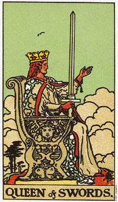

宝剑骑士暗示，要达成愿望需要有敏捷的行动
和其他的骑士相较，宝剑骑士不论在活动、行为和思考上都最快速的。他代表空元素中火的部分，是思想和行动的组合。
他在思想、言谈和行动上都很急躁。慌慌张张又没耐心的他，总是急着要冲往某些新事物，甚至于根本不知道自己的方向在哪里。他对事情的可行性往往毫无评估就开始行动。
这张骑士牌在占星学上象征着牧羊座和狮子座。当皇帝或权杖国王也同时出现时，是代表白羊座;而当宝剑牌的宫廷牌或恋人牌一起出现的时候，就是双子座。
宝剑骑士描述一位年龄介于二十一和三十之间的人，有着敏捷的思想和身体，他喜欢行动甚于审慎规划或深思熟虑。这个人对复杂的事很不耐烦，而较喜欢行动、新鲜事物以及改变。
这个骑士可以选择变成权杖国王或宝剑国王。若要变成权杖国王，它必须稍加规范自己的热情，而若想成为宝剑国王，则必须约束自己的思想。
大体上的意义
宝剑骑士代表的是迅速的行动：跃进或跳出某种情景。作为某个问题的答案，它暗示着一个快速的动作或出其不意的行为是有需要的。已经没有时间去想该做何选择了――去做就对了。
这张牌通常是代表一个年轻人，他不按牌理出牌、缺少耐心、思考敏捷。如果这个人要来帮忙你，你只有很短的时间可以考虑要婉拒或接受，因为很快地，他又会将注意力转移到其他地方去了。
两性关系上的意义
宝剑骑士通常意味，有个人走进了你的生活，然后又在短时间内离开了。对他而言，这是路过，所以你大可以享受和他在一起的时光，不过要记住，他可能改变主意、方向，或落脚处于一瞬间。
对骑士而言，两性关系是一种心智上的交会。他的点子层出不穷，而且在交谈时可以很快的找到一个新方向。海伦的伴侣布列德雷就是一个例子。当海伦在庆祝结婚十周年时，她仍记得和布列德雷的电话交谈，那便是一切的开始。
“你正在吃什么?”
“吃橘子。”
“哦，这让我想到我们在布莱登附近住时，你那条艳橘色的皮带，它还在吗?”
“没有，已经不在了。”
“我听说那栋房子上个礼拜已经卖出去了，卖了差不多有二十五万元也，简直是离谱!你不觉的吗?”
“嗯，的确是。”
“我仿佛还看得到在马克的宴会结束之后，你穿着那件漂亮的绸缎洋装在泥泞的道路上摔了一跤的情形哩。说到马克，他结婚了吗?”
“不，还没有。”
“我已经选好我要举行婚礼的教堂了。”
“你打算和谁结婚呢?”
“还不知道，不过每个人心里面总要有一座教堂，万一有人很在意这些事情的话。”
“哦，布列德雷，你还真说的出口!”
“过奖，过奖。所以到时候你愿意嫁给我吗?”
宝剑骑士很少在你预料的地方结束谈话，因为他的思想老是跳来跳去。他就是天马行空思考的一个例子。
假设你是宝剑骑士，或许你会发现自己因为某些人的思考方式，或因他们某些诡异的特质而被吸引。当你发现自己对他们如何思考，或是他们是怎么样的人的好奇心已经满足之后，你可能对他们失去兴趣而想离开了。
倒立的宝剑骑士
从日常的观点来看，宝剑骑士的倒立暗示，由于缺乏事前的考量以至无法成功。这可能是说你无法规范自己去完成你已着手的事。这张骑士牌代表一种脱序的思考，以及因新奇和感动而迷惑。
倒立的骑士可能是浪费的、粗心的和肤浅的。这里还暗示这没有耐心，无法停下来好好反省过去的种种行为。他经常犯同样的错误，使他觉得更没耐心。他可能会发现自己急着要弥补逝去的光阴，于是做出一大堆动作，却毫无结果。
骑士牌的倒立可能代表着，你开始去做一些你不会或不可能完成的事，因为你很少或根本没有去思考它的完成。你可能会来承诺得比你能做的还多，或是发现自己无法信守诺言，因为情况远比你当初所理解的更复杂。